class: center, middle # Modelling the Solar System # using Blender & Python 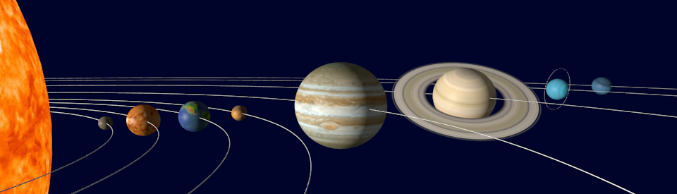 ## <span class="black">Pyladies Workshop, 08.09.2015</span> ### <span class="black">Kristin Riebe</span> ??? Slides online!! Linked from Pyladies page! => Read along what you missed, they are more extensive than needed here. --- # Agenda 1. Introduction 2. Getting started with Blender (GUI) 3. Blender with Python 4. Planets Hands-on session: Write your own planets-script! --- class: middle, center # 1. Introduction --- ## About me * Leibniz-Institute for Astrophysics Potsdam ([AIP](http://www.aip.de)) - E-Science group: data publication, web services - Data visualisation * Hobby: computer graphics - create images 2D/3D - mainly for scientific articles/books or just for fun --- ## Blender * Powerful 3D creation suite * Wide range of applications: geometric objects in 3D, modelling landscapes, animating characters, but also compositing, video editing, ... * Open Source, released by Blender Foundation, [www.blender.org](http://www.blender.org) * Works on Linux, Mac OS and Windows * Interactive use, but also Python API for scripting * Full control over light and camera settings, also 3D stereoscopic cameras * Can be quite overwhelming at first, but: - No need to know everything! - Can get very far with only some basic knowledge. ??? * 3D creation suite: create 3D objects, shape them, render and animate them, combine different render layer, edit animations * mention that I know probably only about 5% of Blender or so * I also made several tries before sticking to it, but it is worth the effort! Don't give up! --- ## Examples: Science 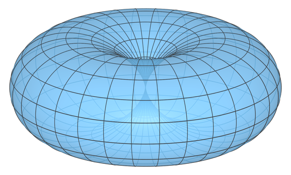 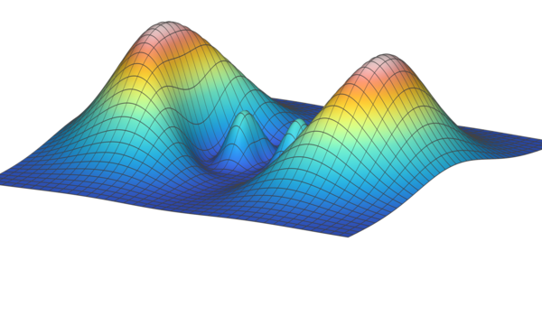 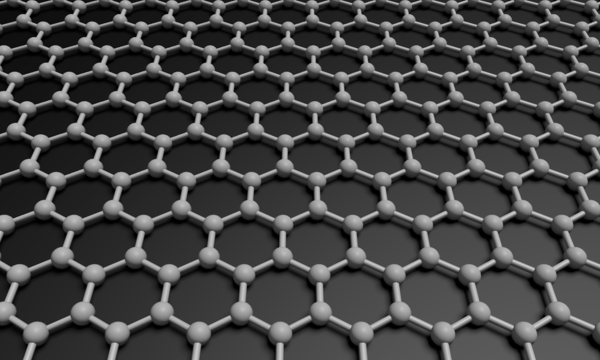 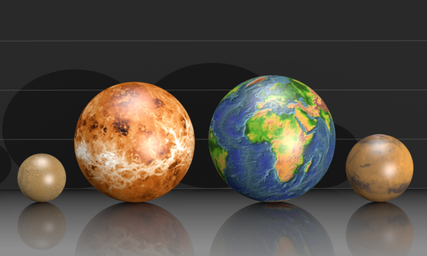 .footnote[(C) Kristin Riebe, Springer/Spektrum Verlag] ??? Used Blender Python for each of them! --- ## Examples II: Science & Fun 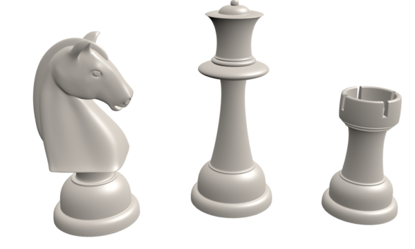 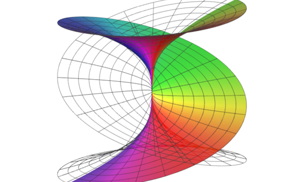 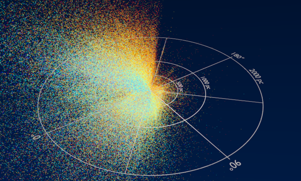 .footnote[(C) Kristin Riebe, top right: Kristin Riebe, Springer/Spektrum Verlag] --- ## Examples III: Just for fun 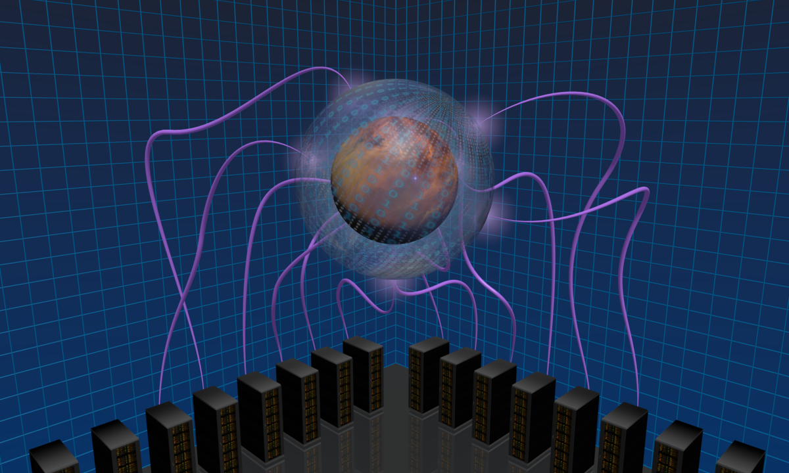 .footnote[(C) Kristin Riebe] See [Blender Artists](http://blenderartists.org/) for great examples what else you can do with Blender! --- ## General tips for Blender * Save early, save often. * There are *hotkeys* for nearly everything. * Use a 3 button mouse (with scroll-wheel). * Use keyboard with num block. * Getting help: - [Blender manual](http://www.blender.org/manual) - [Blender API documentation](http://www.blender.org/api/blender_python_api_2_75_3/) - [Blender StackExchange](http://blender.stackexchange.com/) - [Blender Python Blog](http://blenderscripting.blogspot.de/) - [Blender Artists Forum](http://blenderartists.org/) - There are many, many video tutorials out there! ??? Hotkey = keyboard shortcut Just mention: lots of online material!! --- class: middle, center # 2. Getting started with # Blender (GUI) Start Blender **now**, preferably from the command line. [Installing Blender](http://www.blender.org/manual/getting_started/installing_blender/installing.html) ??? Open Blender --- ## Window layout * Different *areas*: 3D view, Outliner, Properties, ... - 3D view = main working area! * Each area can have a *region* attached (toolbar (`T` key) and properties (`N` key)). * Highly customizable, can switch every area to any other area, define own hotkeys etc. * Last resort if something breaks with window layout/GUI: `File` -> `Load Factory Settings` or just restart Blender * **Important:** Anything you type only affects the window with the mouse pointer! Thus be careful to **put the mouse pointer in the correct area!** ??? Show live! Mention mouse-pointer issues maybe only later. --- ## Navigation * Zooming in and out: `mouse wheel` * Rotate around current center: - click middle mouse button (`MMB`) and drag - for setting the view center to currently selected object: choose `View`->`View Selected` from menu or hit `Numpad .` * Pan (move sideways): hold `Shift` key and `MMB` together and move the mouse sideways. --- ## Selecting and moving objects * Select object: right mouse click (`RMB`) * Add object to current selection: `Shift` + `RMB` * Active object = last selected object! (white highlight) * Moving objects: - Place mouse pointer on one of the 3 arrows, click with left mouse button (`LMB`), drag it along the line, release `LMB` - Hit `G` key ("grab"), move the mouse pointer until ready, then click with `LMB` .center[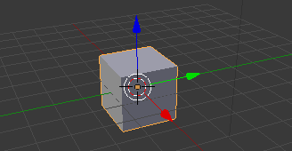] ??? Show live! <!-- ## Add object * Use *Add* menu at bottom of `3D view` area. * Main types: Mesh, Curve, Empty, Camera, Lamp * Adds object and links it to current scene. * Example: `Add` -> `Mesh` -> `UV Sphere` - Move it away from origin using arrows (`LMB`) - Smooth its surface using the `Smooth` button in the toolbar at the left hand side (at *Shading*) ??? * Each object has a data block: mesh information, curve data, camera properties etc., described in *Properties* Show live! --> --- ## Typical steps * **Add object**, adjust location, size, shape - Use *Add* menu at bottom of `3D view` area, e.g.: `Add` -> `Mesh` -> `UV Sphere` - Move using arrows and `LMB` * **Add material** (color, transparency, reflection etc.) - At *Properties* area, *Material* tab: click `New` button * **Add texture** - At *Properties* area, *Textures* tab: click `New` * **Add contraints or modifiers** (also in *Properties*) * **Add keyframes** for animation (using timeline and `I` key) * **Adjust light and camera** for the scene * **Render** the scene ??? Maybe also show modifier for cube <!-- ## Color & textures * Color? -> Need **material** first: *Properties* area, *Material* tab * Can have > 1 material linked to one object * Materials can be shared by > 1 object * Materials can have **textures**: add new texture in *Texture* tab - automatically links the texture to the material - textures can have (multiple) **images** affecting certain properties --> --- ## Rendering * = Take a picture of your scene * Need a camera and a light source (lamp) * Object must be visible for camera - Check with `View` -> `Camera` (`Numpad 0`) * Render: - `Render` -> `Render Image` (at top menu, close to `File`) - or `F12` - or in *Properties* area, *Render* tab, press *Render* button - or directly from command line: ```python blender -b <yourfile.blend> -f 1 ``` * Quit *Render view* using `Esc` key. --- class: center, middle # 3. Blender with Python --- ## Basics * Nearly everything done in the GUI can be scripted via Python. * Blender uses **Python 3**, bundled * Start Blender from the **command line**, otherwise no error output! * Use **Scripting layout** with *Text Editor* and *Python Console* * Load/write scripts inside **Text Editor**, `Text`->`Run Script` * Use **import bpy** inside scripts to import Blender functions * Use `Text`->`Save As` or `Save` to save text as external file. .center[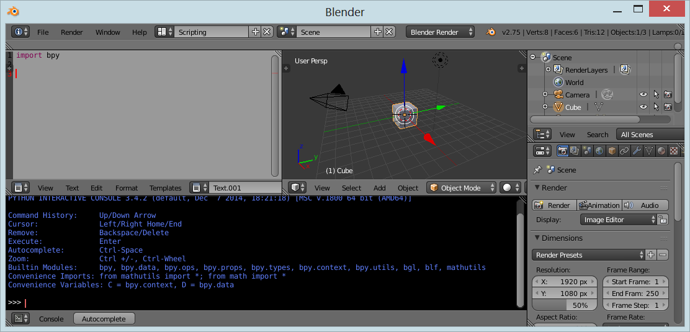] --- ## From GUI to Python * Graphical interface supports you with: - **Info** window: + at the top, above or below *File* menu + shows log of the applied functions - **Tool tips**: + when hovering with the mouse over a button, field, object or other elements - **Right mouse-click** context menu: + often contains link to Blender documentation - **Python Console**: + test functions and properties immediately + use `Ctrl`+`Space` for auto-completion --- ## Python Console, Tooltips and Info <div style="display: table; border-spacing: 0px"> <div style="display:table-row; vertical-align: middle"> <div style="display: table-cell; table-layout: fixed;"> 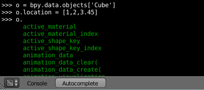 </div> <div style="display: table-cell; table-layout: fixed; vertical-align: middle; padding-left: 20px"> Python Console </div> </div> <div style="display:table-row;"> <div style="display: table-cell; table-layout: fixed;"> 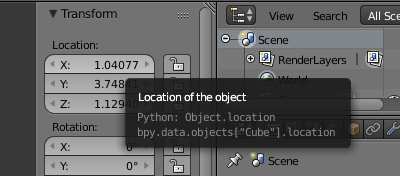 </div> <div style="display: table-cell; table-layout: fixed; vertical-align: middle; padding-left: 20px"> Tool tip </div> </div> <div style="display:table-row"> <div style="display: table-cell; table-layout: fixed;"> 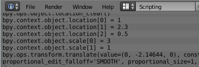 </div> <div style="display: table-cell; table-layout: fixed; vertical-align: middle; padding-left: 20px"> Info log </div> </div> </div> --- ## Active object/choose object * `bpy.context.object` = active object (last selected) * Can be replaced by another object like this: `myobj = bpy.data.objects['CameraPath']` * Example: ```python bpy.context.object.location[0] = 1.0 myobj = bpy.data.objects['CameraPath'] myobj.location[0] = 1.0 ``` --- ## Mode * Available functions and operators change with current mode! * Adjust mode in bottom menu of *3D view* area * Only need `Object Mode` and `Edit Mode` for this session: - `Object mode`: change global properties - `Edit Mode`: change data, e.g. handles of Bézier curves, vertices and faces of a mesh * Always switch back to `Object Mode` before running scripts in this workshop! * Via Python: `bpy.ops.object.mode_set(mode='OBJECT')` --- ## Operators * Start with `bpy.ops.` * Operate on the current context, i.e. usually on currently **active** object, in the current mode * Example: smooth a sphere (*Object* mode): ```python sph = bpy.data.objects['Sphere'] bpy.context.scene.objects.active = sph bpy.ops.object.shade_smooth() ``` * Generally slow, but encapsulate more complex steps * Use underlying low-level functions, when possible and useful ??? TODO: first talk about mode or about operators? Mode propably best, since adding object via operator after operator slide fits well. bpy.ops is the Python access path --- ## Adding objects I * Using (primitive) operator: ```python bpy.ops.mesh.primitive_uv_sphere_add(...) obj = bpy.context.object mesh = obj.data ``` --- ## Adding objects II * Using low level functions: ```python mesh = bpy.data.meshes.new(meshName) obj = bpy.data.objects.new(objName, mesh) scn = bpy.context.scene scn.objects.link(obj) scn.objects.active = obj obj.select = True mesh.from_pydata(verts, [], faces) mesh.update() ``` * See [Three ways to create objects](http://wiki.blender.org/index.php/Dev:2.5/Py/Scripts/Cookbook/Code_snippets/Three_ways_to_create_objects) --- ## Data collections * Module `bpy.data` gives access to data in currently loaded Blender file * Examples: - `bpy.data.objects`: collection of all objects in the scene - `bpy.data.materials`: collection of all materials - `bpy.data.textures`: collection of all textures * Blender's collections allow use of index or string for accessing elements: - `bpy.data.objects['Camera']` - `bpy.data.objects[0]` ??? <!-- ## Data types * Native Python types (string, int, float, boolean) * Blender enumerators and strings * Blender internal types: `bpy.types.bpy_struct` ??? Skip this --> --- ## More advanced usage * Blender allows to integrate Python scripts directly: - via own defined operators - by defining menus and panels for custom scripts, own add-ons - by inserting new buttons into existing panels * Look at *Text Editor*, `Templates` menu for such examples. * There's a number of useful `Add-ons` available, see `File`->`User Preferences`, `Add-ons` * We won't use these in this workshop. --- class: middle, center # 4. Planets --- ## Planets? * Non-glowing bodies, orbiting around a star * 8 planets for the Sun * Properties: - closely resemble spheres, a bit flattened - each planet has different surface or cloud structure - rotate around star on ellipses (mostly close to circles) - rotate around their own axis - own rotation axis is tilted - some planets have ring system - have very different rotation times and orbit periods * Solar system in 3D should reflect this --- ## Creating planets with Blender * Materials on GitHub, linked at: http://kristinriebe.github.io/solarsystem-workshop/ * Contains instructions to guide you * Example for final animation: <video width="640" height="360" controls> <source src="images/planets-animated.mp4" type="video/mp4"> <source src="images/planets-animated.webm" type="video/ogg"> <source src="images/planets-animated.ogg" type="video/ogg"> Your browser does not support the video tag. </video> --- ## Getting started * Start Blender from command line * Open `planets-template.blend` * In *Text Editor*, load `create_planet.py` * Comment all functions except `add_sphere` * Run the script: `Text`->`Run Script` (`Alt`+`P`) * Test e.g. changing location, size, color * Add material and textures, check interface and script * Render to see results ??? Need to show these things live, so people know where to start! Mention that they can use any textures they want, create artificial planetary systems or use the Exoplanet database for other planet parameters --- ## Main tutorial steps I .right-column13[ <br> 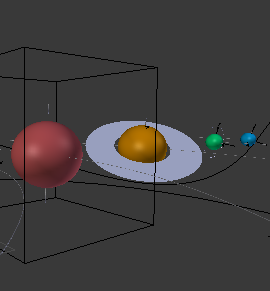 ## ].left-column23[ * Create spheres, add color and texture - use template script, adjust it * Read planet properties from file - use csv module, dict reader * Add flattening, axial tilt, rings - manipulate properties - use another script as module * Orbit paths - add curves, adjust thickness * Camera animation - constraints (Follow Path, Track To) - keyframe evaluation time ] ??? I'll be happy. if you make it as far as to the orbit paths! --- ## Main tutorial steps II .right-column13[ <br> 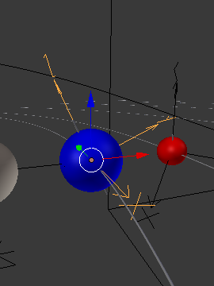 ## ] .left-column23[ * Orbit animation - use constraint (Follow Path) - keyframe evaluation time - adjust animation curves (F-Curves) - apply transformations * Rotation animation - parenting - set keyframes - adjust animation curves (F-Curves) * Render - via interface or script ] --- class: middle, center # Have fun! http://kristinriebe.github.io/solarsystem-workshop/